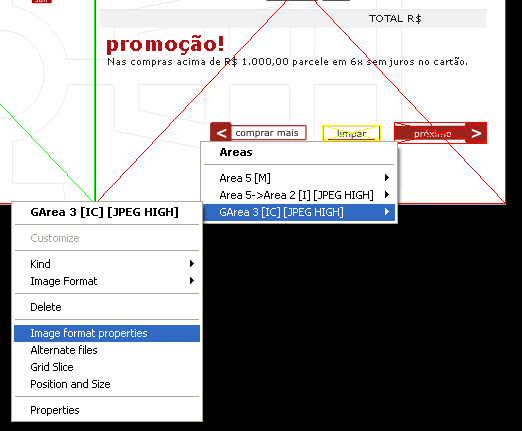

Another unique HTMLButcher feature is easy transparent image generation. You can set transparency for an area by pixel color, or pixel position.
To set transparency options, right-click on any AREA, and select "Image format properties".

![[Tip]](images/tip.png) | Tip |
|---|---|
This screen can also be used to preview/compare image formats for the area. |
Choose a image format that supports transparency (like GIF or PNG).
Select the type of transparency desired (you can mix transparency types on the same image), and double-click on a image pixel. The pixel color/position will be added to the list of transparent itens.